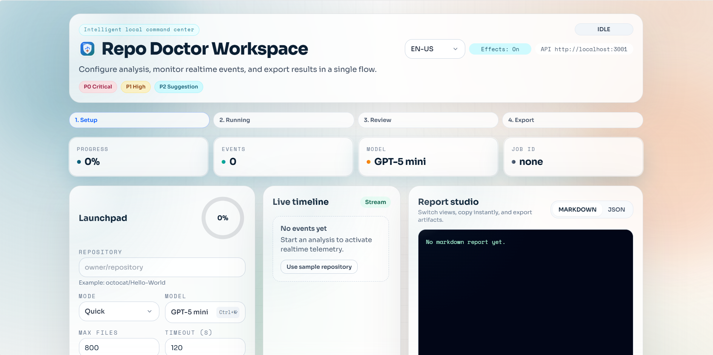

Repo Doctor Web UI
Team-friendly repository diagnostics with model control, live progress, and actionable reports.
First run: local Web UI
This Web UI runs locally from the project. Start it with one command and open the URL printed in the terminal.
git clone https://github.com/glaucia86/repo-doctor.git
cd repo-doctor
npm install
npm run dev:local-ui
Expected output: API and Web ports. Default Web URL is http://localhost:4173.
What you get
- Model picker with free and premium model options.
- Step timeline for transparent analysis progress.
- Markdown/JSON report views with copy and export actions.
- Visual context for maintainers and contributors.
Interactive preview
Input repository -> track job -> review prioritized findings.
Recommended workflow
Run diagnosis in CLI, share decisions in Web UI, then publish issues back to GitHub.